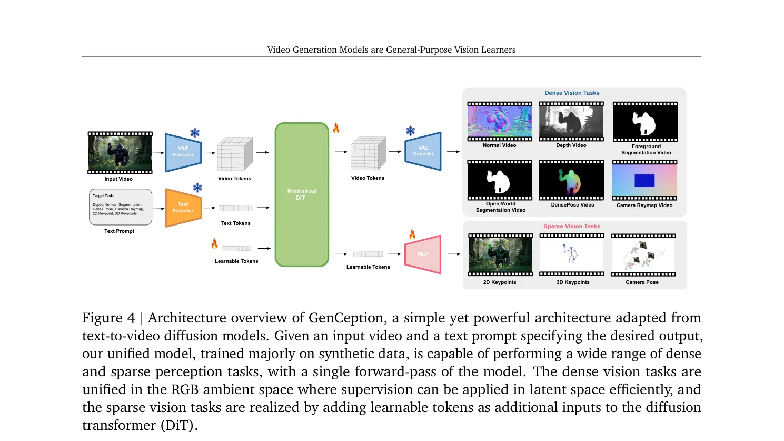
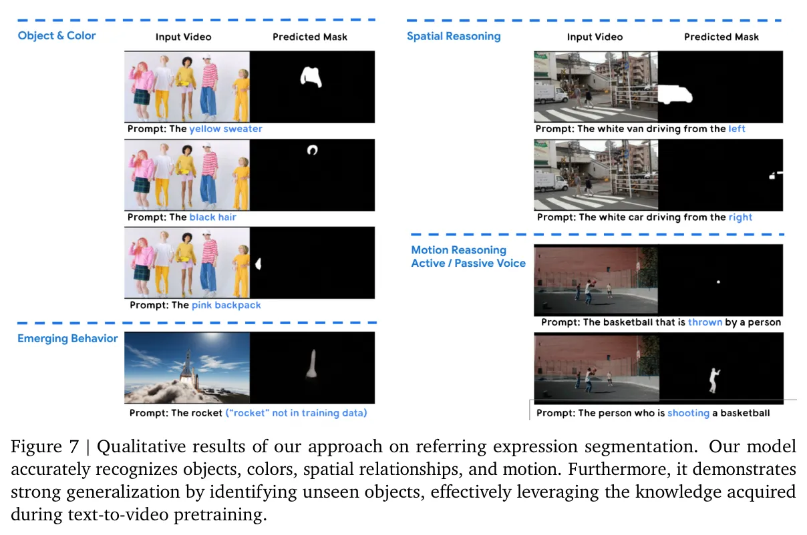
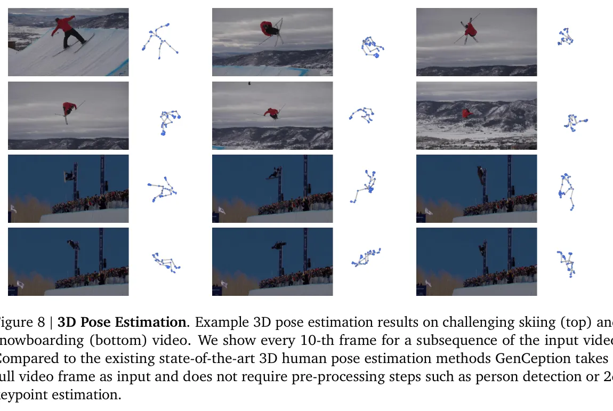
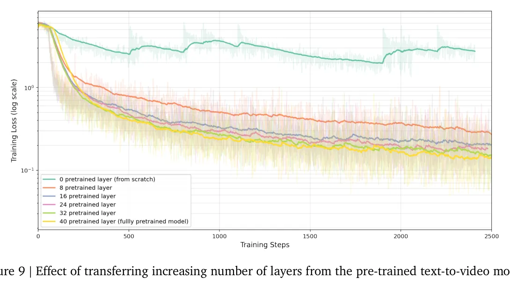

原文："Driven by next-token prediction, NLP shifted from task-specific models into powerful generalist foundation models. What, then, is the equivalent catalyst needed to achieve a general-purpose model in computer vision?"
原文："we contend that large-scale text-to-video generation serves as a strong pre-training paradigm for computer vision, providing the necessary spatiotemporal priors, vision-language alignment, and scalability required for general visual intelligence."
原文："We introduce GenCeption, which leverages a pre-trained video generative diffusion backbone to define a feed-forward perception model, capable of performing various vision tasks steered by text instructions."
原文："GenCeption achieves state-of-the-art performance across a diverse suite of tasks, including depth, surface normal, and camera pose estimation, expression-referring segmentation, and 3D keypoint prediction, often matching or surpassing specialized models (e.g. DepthAnything3, SAM3, D4RT, VGGT-Ω, Sapiens, David, Genmo, and Lotus-2)."
🔍 指路：结果——覆盖 深度 / 表面法向 / 相机位姿 / 指代分割 / 3D 关键点 一大票任务，匹配甚至超过各自的专用模型。注意点名的对手 D4RT（CVPR2026 Best Paper）、VGGT-Ω 都是重量级几何模型。
原文："Furthermore, the video generative pretrained backbone outperforms alternative pretraining paradigms (e.g., V-JEPA, and Video MAE)... GenCeption exhibits preliminary data and model scaling properties along with exceptional data efficiency, where it achieves comparable performance with leading models like D4RT and VGGT-Ω with 7× to 500× less training data."
原文："a model trained exclusively on synthetic human videos generalizes to real-world footage and out-of-distribution object categories (e.g., animals and robots). These findings suggest that video generation is not merely a synthesis tool, but a foundational path toward generalist vision intelligence for the physical world."
原文："computer vision is still lingering in its 'specialized model' stage. While recent years have yielded powerful foundation models such as Segment Anything ... Depth Anything ... these remain fundamentally task-specific models that need customized architectures for each task ... we have yet to realize a unified vision foundation model."
① Spatio-Temporal Evolution "The world is a 4D continuum. The pre-training objective should force the model to internalize the 4D temporal causality and physics of a world in motion." —— 逼模型内化 4D 时序因果与物理。
② Vision-Language Alignment "visual features should be natively aligned with linguistic semantics" —— 视觉特征与语言语义原生对齐，才能继承指令跟随 + 常识。
③ Scaled up "scaled in both data and compute, ultimately enabling the emergence of vision intelligence." —— 数据/算力可 scale，最终涌现视觉智能。
从"专用"到"统一"的四象限演进：Specialized（每任务独立 backbone+head+loss）→ Specialized-Head（统一 backbone、各任务 head/loss）→ Specialized-Loss（统一 backbone+head、各任务 loss）→ Unified（Ours）：统一 backbone + 统一 head + 统一 loss，任务只由 text prompt 指定。
原文："task specifications are shifted from architectural modifications to data format designs, which enables scaling up with an ever-growing spectrum of visual tasks."
Figure 1 | Methodology (Left): GenCeption treats a video generative diffusion model as a pre-training base to capture rich spatio-temporal world priors and native vision-language alignment at scale. During multi-task post-training, the model is adapted to feed-forward model fine-tuned on predominantly synthetic data to handle diverse perception tasks. GenCeption shows strong performance with intriguing Emerging Behaviors, enabling seamless sim-to-real transfer and generalization to out-of-distribution object categories. Paradigm Shift (Right): a paradigm shift from specialized task-specific computer vision models, to fully unified generalist vision models.
3.1 三大方法论原则
① 生成预训练即表征学习 用预训练 text-to-video 扩散模型作 universal backbone。核心守则：最大程度遵守原预训练 regime、最小改动，以完整保留其时空/几何/物理/语言对齐先验。
② 统一架构下 task-agnostic 后训练 把各视觉任务当成统一 seq-to-seq 映射，不做任务专属 encoder/decoder/loss。把各目标模态格式化进 共享表征空间（dense→RGB）。
③ 前馈重构 感知要"准且快"，所以把多步生成 backbone 变成 单步前馈 感知模型。
3.2 从扩散预训练到感知微调（单步前馈的关键技巧）
预备：原 DiT 在 Rectified Flow 下预测 velocity v = ε − x0（x0=干净视频 latent，ε=噪声），去噪步 index 作额外输入调制。
原文："instead of taking noisy video latents as inputs, we directly feed the clean latent of the input video as the inputs to DiT, and conduct only a single forward-pass... the conditioning timestep is fixed to t = 0... Since the DiT is trained under the Rectified Flow objective to predict the velocity v = ε − x0, we thus negate the raw output of the DiT... The negated output −v = x0 − ε aligns with the latent of the target video more closely, which empirically accelerates model convergence and improves performance."
本质：把 DiT 当强 feature extractor。"we harvest features directly from the final layer rather than intermediate ones; this ensures they natively align with the subsequent decoder, without any architectural modifications to the base model." —— 取 最后一层 特征（不是中间层），天然对齐原 VAE decoder，backbone 零架构改动。

Figure 4 | Architecture overview of GenCeption, adapted from text-to-video diffusion models. Given an input video and a text prompt specifying the desired output, our unified model (trained majorly on synthetic data) performs a wide range of dense and sparse perception tasks with a single forward-pass. Dense vision tasks are unified in the RGB ambient space where supervision is applied in latent space efficiently; sparse vision tasks are realized by adding learnable tokens as additional inputs to the diffusion transformer (DiT). （❄ 冻结：VAE Encoder/Decoder、Text Encoder；🔥 可训：DiT、learnable tokens、MLP head）
用像素级 "Rothko" raymap：ray origin 放中心区、ray direction 放周边，拼进 3 通道（Figure 5）
原文："Analogous to reformatting non-text data into text strings for LLMs, we advocate for projecting fundamentally visual tasks directly into the continuous pixel space—the native domain where pre-trained visual priors are best leveraged."
原文："We append T learnable tokens—one for each video frame—to the video latents. After passing through the model, an MLP decodes each token to predict a K-dimensional target per frame... we apply its native 3D RoPE to the additional tokens... Empirically, this additional-query approach outperforms methods that rely on adding extra attention layers."
🔍 指路：给 video latent 追加 T 个可学习 token（每帧一个）→ 过模型 → MLP 解出每帧 K 维目标。为守"最小改动"：沿用 DiT 原生 3D RoPE；空间位置未知故设为 learnable；时间位置用 position interpolation 把 T 帧缩到 latent 长度 T′ 的范围内。这种"加 query"方式优于"加额外 attention 层"。
原文："we adopt a fully unified loss design: our model is trained solely using a standard L2 loss, mirroring how LLMs unify diverse language tasks under a single objective... we shift the responsibility of task-specific customization from the loss formulation to the data representation designs."
原文："despite its unified and simple architecture, our approach surpasses or delivers highly competitive performance against heavily tailored, task-specific state-of-the-art methods... it also delivers stronger 3D keypoint prediction performance compared to specialized models including Genmo and TRAM."
6.1 联合(generalist) vs 单任务(specialist)：sparse 任务是软肋
原文："joint training severely degrades 3D human keypoint estimation and compromises other dense tasks. We presume this stems from two architectural factors. First, the explicit token-based coordinate regression diverges from the continuous pixel-space pre-training... Second, the additional learnable tokens, trained from scratch, disrupt the native attention mechanics of pre-trained DiT layers... This phenomenon suggests... one should strive for minimal architectural modifications to the pre-trained backbone."
原文："our diffusion-based pretraining (WAN 2.1) significantly outperforms other pretraining approaches... suggestive empirical evidence that the generative diffusion objective itself—rather than just the dataset or model scale—is essential for extracting superior spatiotemporal priors... training the randomly initialized DiT from scratch yields a nearly flat learning curve. Performance improves as more pre-trained layers are used."
🔍 指路：两条证据钉死"预训练是关键"：① 同数据下 WAN 完胜 V-JEPA/VideoMAE（§5.4）；② 从头训随机 DiT → 学习曲线几乎是平的；迁移越多预训练层、性能越好（Figure 9）。所以性能来自"视频生成预训练"，不是架构或 fine-tune 数据本身。
作者把"任务专属定制"从 loss 下沉到数据表示。经典例子是单目深度的 scale 歧义（通常要 scale-invariant loss）——这里改成数据层：用场景 median depth 归一化 + 非线性映射 d' = clip(α·log(d+1), 0, 1) 直接消歧义并落进 [0,1]。于是 loss 永远是标准 L2，任务间平衡只靠调数据混合比，跟 LLM 一模一样。好处是扩任务时没有"手调 N 个 loss 权重"的工程爆炸。
Figure 3：Capabilities Illustrations. GenCeption is a versatile video perception model with SOTA performance on a multitude of output modalities including surface normal, depth, foreground segmentation, expression-referring open-world segmentation, dense human pose, 2D/3D keypoints, and camera pose. Trained on human-centric synthetic videos, yet generalizes to real videos for people and other categories such as animals and anthropomorphic characters.

Figure 7：Qualitative results on referring expression segmentation. The model accurately recognizes objects, colors, spatial relationships, and motion; and generalizes to unseen objects, leveraging knowledge acquired during text-to-video pretraining.

Figure 8：3D Pose Estimation on challenging skiing (top) and snowboarding (bottom) video (every 10-th frame shown). GenCeption takes a full video frame as input and does not require pre-processing such as person detection or 2D keypoint estimation.

Figure 9：Effect of transferring increasing number of layers from the pre-trained text-to-video model. (更多迁移层 → 更好性能；从头训随机 DiT 学习曲线近乎平。)